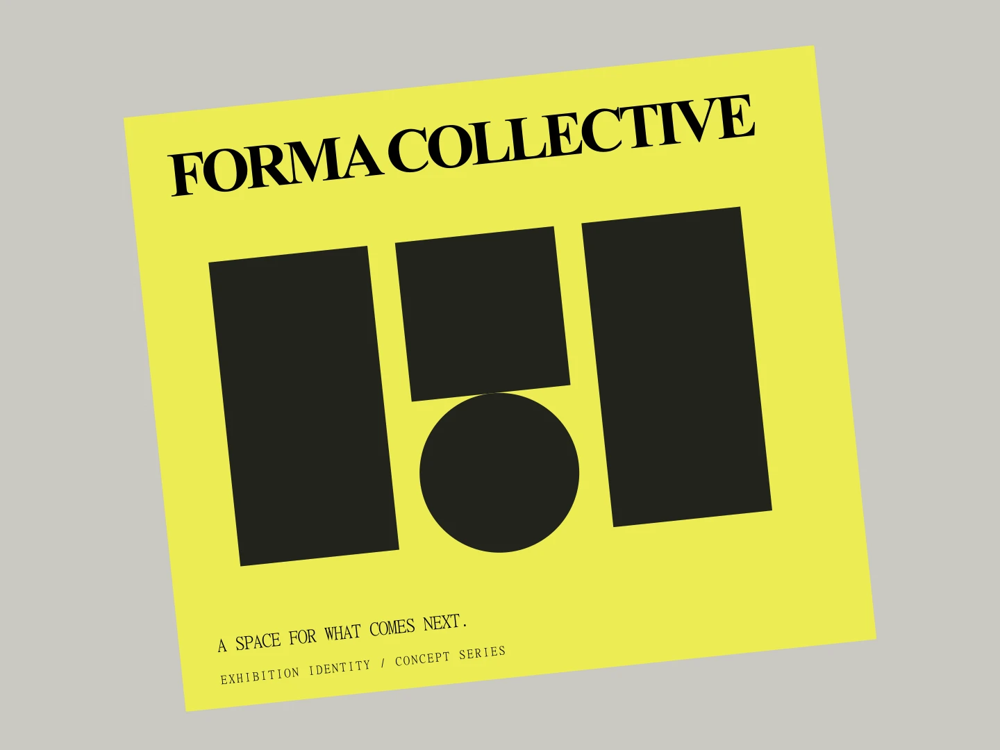
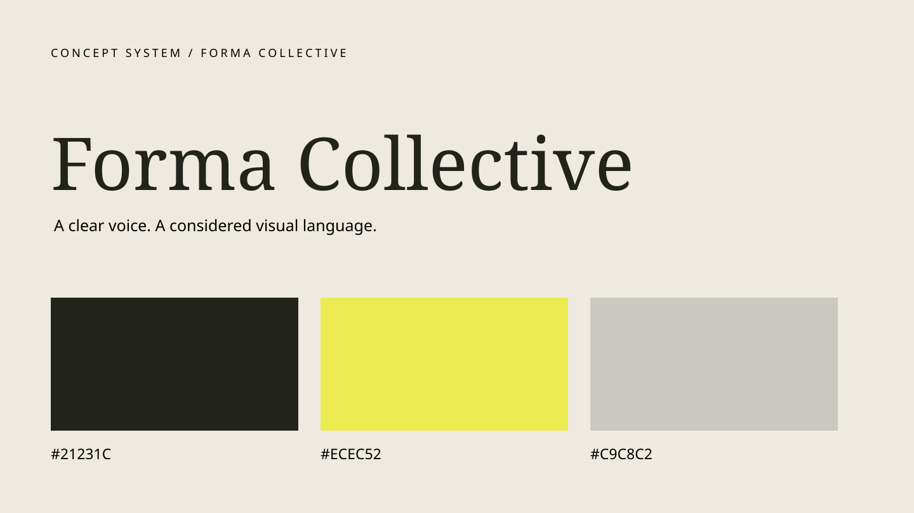
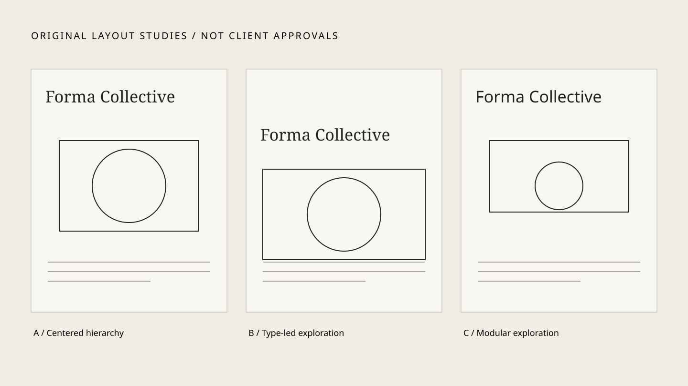

BRAND IDENTITY / 2024 / SELF-INITIATED CONCEPT
Forma Collective
A modular identity that makes room for the next idea.

- CLIENT / INDUSTRY
- Self-initiated cultural identity
- ROLE
- Independent concept designer
- YEAR
- 2024
- COLLABORATORS
- None / self-initiated
The challenge
Give an emerging exhibition concept a flexible identity across changing programs. Design-minded cultural audiences; legibility and adaptability across inexpensive print formats.
A considered direction
A compact family of simple geometric forms provides a recognizable, open-ended language. Acid yellow, charcoal, bold sans-serif and a flexible three-column geometric grid.
From idea to application
Identity concept, exhibition poster and layout rules. Arranged a small set of rectangles and circles into multiple configurations; the selected poster demonstrates the grid rather than a real exhibition. Venue, program and real-world results are pending.
An honest outcome
Self-initiated concept study only. No commercial launch, real client endorsement, measured business result or production proof has been supplied. Collaborators: none.


A verified result or approved client perspective belongs here.
No fabricated metrics or praise.